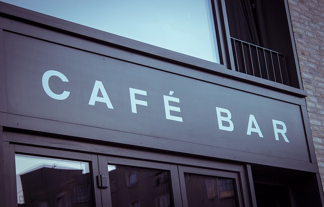

Café Bar
Home
Café bar fue fundada por cuatro amigos apasionados por el buen café y la buena comida. Juntos, compartían el sueño de crear un lugar donde la gente pudiera disfrutar de deliciosos platillos caseros y aromáticos cafés mientras se sentían como en casa. Tras meses de planificación y trabajo arduo, abrieron las puertas de "CAFÉ-BAR”, una acogedora cafetería-restaurante que rápidamente se convirtió en el corazón del pueblo.>
Con el boca a boca y las redes sociales, la popularidad de la cafetería-restaurante creció rápidamente, atrayendo a visitantes de toda la región. Pero los cuatro amigos no se conformaron con eso. Decidieron llevar su negocio al siguiente nivel y expandirse en línea.
Con mucha dedicación, lanzaron una tienda online donde ofrecían una selección de sus productos estrella: desde granos de café recién tostados hasta kits para hornear tortas y budines. La calidad y el sabor excepcionales de los productos de CAFÉ-BAR conquistaron los paladares de personas de todo el mundo.
Con el paso de los años, la tienda online se convirtió en un éxito rotundo, llegando a enviar sus productos a países tan lejanos como Japón, Australia y Estados Unidos. Los cuatro amigos se sentían orgullosos de haber llevado su pasión por la buena comida y el buen café a tantas personas alrededor del mundo. Hoy en día, CAFÉ-BAR sigue siendo un lugar de encuentro para la comunidad local, pero también es reconocido a nivel global como un referente en la industria gastronómica. Y todo comenzó con la amistad y el sueño compartido de cuatro personas que creían en su visión y trabajaron incansablemente para hacerla realidad.